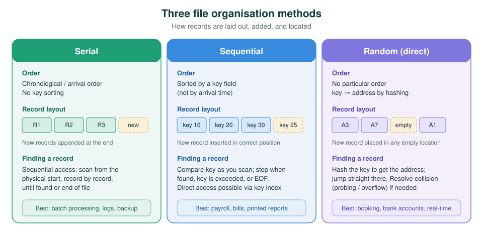
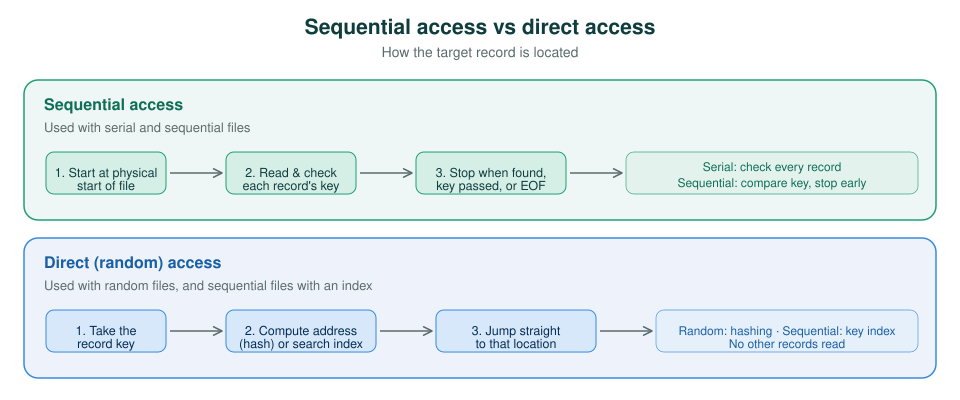
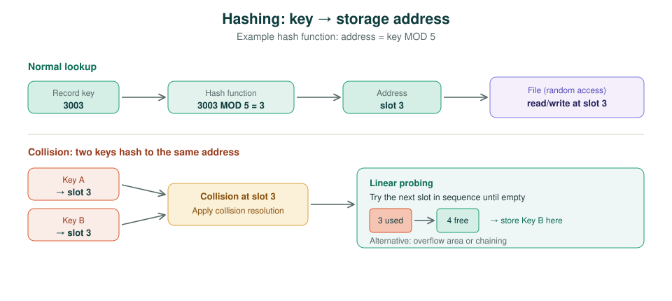

File organisation
- Modern computer systems handle vast amounts of data
- Everything from bank transactions to music libraries is stored in files
- To retrieve information quickly and efficiently, data must be organised properly
What is file organisation?
- Files are used to store data permanently on secondary storage
- Data in a file is stored as a collection of records, where each record represents a single item (e.g. a customer, a transaction, a product)
- The way records are arranged within a file is called the file’s organisation method
- Choosing the right method affects how quickly data can be searched, added, updated, or deleted
Why is file organisation important?
| Reason | Explanation |
|---|---|
| Efficient data access | Well-organised files allow fast searching and retrieval |
| Supports large-scale systems | Enables millions of users to access data simultaneously (e.g. online banking) |
| Improves program performance | Reduces load times and processing requirements |
| Enables reliable updates | Helps manage changes to stored data safely and accurately |
File organisation methods
Serial, sequential and random organisation ★

What are the different file organisation methods?
- The way data is arranged within a file affects how efficiently it can be accessed and updated
- Each file organisation method has its own strengths and is suited to different types of tasks
Serial file organisation
| Description | Example use case |
|---|---|
| Records are stored one after the other in the order they arrive / chronological order (no sorting). New records are appended at the end of the file. To find a record, the file is searched from the physical start, record by record, until the record is found or the end of file is reached. | Batch processing tasks, creating transaction files, data logging, storing bills/payroll, backup |
- Simple to implement, but slow to search if there are many records
- Every record (including earlier ones) must be checked, so it suits files that are processed in full rather than looked up one record at a time
Sequential file organisation
| Description | Example use case |
|---|---|
| Records are stored one after the other in a given order, normally sorted by a key field / unique identifier. A search can stop as soon as the current key passes the target key. New records are inserted in the correct position; updating normally requires a new version of the file to be created. | Payroll systems, generating bills, exam results, printed reports |
- More efficient for searches and ideal for files that are read often but rarely updated
- Chronological order is not sequential organisation — that would be serial organisation
- Direct access is possible with an index of all key fields, which is searched for the address of the target record
Direct (random) file organisation
| Description | Example use case |
|---|---|
| Records are stored in no particular order / in any available position, but there is a relationship between a record’s key and its location: a hash function applied to the key field calculates the address. New records are added in an empty location and updates can be carried out directly. | Booking systems (e.g. airline), operating system file management, video games, encryption utilities, compression utilities, bank account access, real-time stock updates |
- Best for fast, real-time access to individual records
- Uses direct file access
Choosing a file organisation method ★
- Serial — best when every record is processed in turn and single-record lookups are rare (end-of-day transaction logs), because a new record is simply appended and no re-sorting is needed
- Sequential — best when the file is sorted on a key field and most processing sweeps through it in key order (payroll, printed reports), because a search can stop as soon as the key is passed
- Direct (random) — best when one record must be found or updated quickly by key (bank accounts, seat booking), because the address is calculated rather than searched
- Choosing — ask: is one record needed, or the whole file? is there a unique key? how often are records added or deleted? how much storage can be spared for an index or for empty slots?
(a) State one example of where serial file organisation could be used.
(b) Describe how records are organised in serial files.
© Outline the process used to find a record in a serial file.
Answer
3(a) [1 mark] One mark for an appropriate use of serial file organisation (Max 1)
- Batch processing tasks
- Creating a transaction file for a batch
- Storing bills/payroll
- Backup
- Appropriate example where data is added chronologically
3(b) [2 marks] One mark per mark point (Max 2)
- MP1 Records are stored in a file one after the other
- MP2 … in chronological order
- MP3 New records are appended/added at the end of the file
3© [3 marks] One mark per mark point (Max 3)
- MP1 Sequential file access is used
- MP2 Each record in the file is searched / checked, one after the other,
- MP3 … until the end of the file is reached
- MP4 … until the record is found.
(a) Describe sequential and random methods of file organisation. Sequential file organisation: … Random file organisation: …
(b) Outline the process of sequential access for serial and sequential files.
Answer
4(a) — sequential (Max 2) One mark per mark point
- MP1: Records (in the file) are ordered
- MP2: …based on the key field
- MP3: A new version (of the file) has to be created to update the file
4(a) — random (Max 2) One mark per mark point
- MP4: Records are stored in no particular order within the file // There is no sequencing in the placement of the records
- MP5: There is a relationship between the key of the record and its location within the file // a hashing algorithm is used to find the location of the record
- MP6: Updates to the file can be carried out directly.
4(b) [2 marks] One mark per mark point (Max 2)
- MP1: Start at the beginning of the file
- MP2: …check records linearly
- MP3: …until the desired record is found // … processing / updating records as required //… EOF found.
(a) Compare sequential and serial methods of file organisation. [4]
(b) State the most suitable method of file access when a record is referenced by a unique address on a disk-type storage medium. [1]
© State the most suitable method of file access when a bank stores its data records in ascending order of account number. [1]
Answer
5a [4 marks]
- In both serial and sequential files records are stored one after the other
- … and need to be accessed one after the other
- Serial files are stored in chronological order
- Sequential files are stored with ordered records
- … and stored in the order of the key field
- In serial files, new records are added in the next available space / records are appended to the file;
- In sequential files, new records are inserted in the correct position
5b [1 mark] Direct (access)
5c [1 mark] Sequential (access)
File access methods
Sequential access and direct access ★

What are file access methods?
- Once a file is organised and stored, it must be accessed correctly in order to retrieve or update data
- The method of access depends on the file organisation used
Sequential access
- Sequential access means accessing records one after another, in order, starting from the physical start of the file
- The record key is compared as each record is read; the search stops when the record is found, when the key of the current record exceeds the target key, or at the end of the file
| Key features | Used with |
|---|---|
| Reads records in sequence from the physical start | Serial and Sequential files |
| For serial files every record is checked (stored in chronological order) | Must process earlier records first |
| For sequential files the key field is compared and the search can stop early | Records ordered by a key field / index |
| Efficient when reading the whole file | Ideal for batch processing (e.g. payroll, reports) |
- Example: Reading every student’s exam result in order of candidate number
Direct (random) access
- Direct access allows a program to jump straight to the location of a specific record, without other records being read
- The location is found using the key field of the target record — via a hashing algorithm (random files) or an index of key fields (sequential files)
| Key features | Used with |
|---|---|
| Accesses records directly by position or key | Sequential (with indexing) and Random files |
| Fast access to individual records | Ideal for databases and real-time systems |
| Requires a calculation or index to find the correct location (e.g. hashing) | Useful when you need to look up a record quickly |
- Example: Accessing a bank account record by account number
(a) Describe the sequential method of file access.
(b) Explain how the sequential method of file access is applied to files with serial organisation and to files with sequential organisation.
Answer
4(a) [2 marks] One mark per mark point (Max 2)
- Sequential access method searches for records one after the other…
- …from the physical start of the file until the record is found / the end of file.
4(b) [3 marks] One mark per mark point (Max 3)
- For serial files, records are stored in chronological order…
- …every record needs to be checked until the record is found, or all records have been checked.
- For sequential files, records are stored in order of a key field/index, and it is the key field/index that is compared.
- …every record is checked until the record is found, or the key field of the current record is greater than the key field of the target record.
(a) Outline what is meant by direct access as a method of file access.
(b) Explain how direct access is used to locate a specific record in sequential files and random files. (i) Sequential files … (ii) Random files …
Answer
7a [2 marks] One mark per mark point (Max 2)
- Direct access allows a record to be found in a file without other records being read.
- Records are found by using the key field of the target record // the location of the record is found using a hashing algorithm.
7b(i) [2 marks] One mark per mark point (Max 2)
- In sequential files, an index of all key fields is kept
- The index is searched for the address of the file location where the target record is stored.
7b(ii) [2 marks] One mark per mark point (Max 2)
- A hashing algorithm is used on the key field of the record
- … to calculate the address of the memory location where the target record is expected to be stored.
- Method to find a record if it is not at the expected location e.g. linear probing, search overflow area etc.
(a) State one example of where sequential file organisation could be used.
(b) Describe how records are organised in sequential files.
© Outline the process of sequential file access to find a record in a sequential file.
Answer
4(a) [1 mark] One mark for an appropriate use of sequential file organisation (Max 1)
- Batch processing tasks;
- Recording log files;
- Generating bills/payroll;
- Backup;
- A valid example where the data is stored in a specified order.
Examiner’s note (not part of the mark scheme): Guidance: Do not allow examples that simply describe sequential file organisation, such as ‘records are stored one after the other’.
4(b) [2 marks] One mark per mark point (Max 2)
- MP1 Records are stored in a file one after the other / linearly;
- MP2 … in a given order;
- MP3 … usually based on a key field / unique identifier.
Examiner’s note (not part of the mark scheme): Guidance: Chronological order is not correct for MP2 – that would be serial organisation.
4© [3 marks] One mark per mark point (Max 3)
- MP1 Each record in the file is searched, one after the other / linearly // Each record in the file is searched from the physical start of the file;
- MP2 … using the record key;
- MP3 … until the record is found;
- MP4 … until the value of the record key being searched has been exceeded // … until the end of the file is reached.
Examiner’s note (not part of the mark scheme): Guidance: Candidates whose answer is about searching an index as for index sequential files do not answer this question.
Hashing algorithms
Hashing algorithms ★

What is a hashing algorithm?
- A hashing algorithm is used to calculate the storage location (address) of a record in a random (direct access) file
- It allows for fast access to data without searching sequentially through a file
Why use hashing?
- Provides direct access to records using a key (e.g. ID, account number)
- Useful when dealing with large files that need fast search, read, or write operations
- Used in random files and sometimes in indexed sequential files
How hashing works?
- A hashing algorithm takes a key (e.g. StudentID) and uses a mathematical function to calculate a file address
Address = HashFunction(Key)
- If two keys produce the same address, a collision occurs
- This must be resolved (e.g. via linear probing or overflow areas)
Writing a record to a file:
Address ← HashFunction(Key)
WRITE file[Address], Record
Reading a record from a file:
Address ← HashFunction(Key)
READ file[Address], Record
- If the expected record is not found at the hashed location, a collision resolution strategy must be applied to find the correct record
Types of hashing algorithms
| Method | Description |
|---|---|
| Modulo Division | Most common method: Key MOD TableSize |
| Folding Method | Breaks the key into parts and adds them together |
| Mid-Square Method | Square the key and use the middle digits as the address |
| Multiplicative Hashing | Multiplies the key by a constant and uses fractional part × tablesize |
Collision handling strategies
| Strategy | Description |
|---|---|
| Linear probing | Try the next available slot in sequence |
| Overflow area | Store conflicting records in a separate file/area |
| Chaining | Store all records with the same address in a list |
Hashing is also examined inside direct-access questions — see 2024 Summer P32 Q7(b)(ii) and 2023 Winter P31 Q4(a) in the index below.
Random file organisation can be used with a database management system. (a) State one other example of where random file organisation could be used.
(b) Describe how records are organised in random files.
© Outline the process used to find a record in a random file.
Answer
2(a) [1 mark] One mark for an appropriate use of random file organisation (Max 1)
- Booking systems e.g. airline
- Operating system file management systems
- Video games
- Encryption utilities
- Compression utilities
2(b) [2 marks] One mark per mark point (Max 2)
- MP1 Records are stored in no particular order / any available position
- MP2 A record key is used to determine the location where the record is to be stored
- MP3 … which is generated using a hash function on the key field
- MP4 New records are added in an empty location
2© [3 marks] One mark per mark point (Max 3)
- MP1 Direct file access is used
- MP2 A hashing function is used on the key field to find the location in the file where the record is stored
- MP3 If the required record is found at the hashed location it is retrieved
- MP4 If the required record is not found, a collision resolution strategy is employed // Records from that point are searched linearly until the required record is found // Linear probing
(a) Describe how records are organised and accessed in a sequential file.
(b) A hashing algorithm is used to calculate storage locations for records in a random access file. The algorithm calculates hash values using the function modulus 5.
The function modulus gives the remainder after integer division.
For example, 3003 modulus 5 = 3, so the record key 3003 gives a hash value of 3.
Complete the table to show the remaining hash values.
| Record key | Hash value |
|---|---|
| 3003 | 3 |
| 1029 | |
| 7630 |
Answer
2(a) [3 marks] One mark for each correct point (Max 3)
- Records are stored in a particular order
- The order is determined based on the value in a key field
- Records are accessed one after the other
- Records can be found by searching from the beginning of the file, record by record
- … until the required record is found or the key field value is exceeded
2(b) [2 marks] One mark for each correct hash value (Max 2)
- 1029 → 4; 7630 → 0
- Working: 1029 mod 5 = 4, 7630 mod 5 = 0.
Exam Question Index
| Sub-question | Exam point | Source |
|---|---|---|
| P31 Q2(a) | File organisation methods & choice — appropriate use of random file organisation | 2026 Summer P31 Q2(a) |
| P31 Q2(b) | File organisation methods & choice — organisation of records in random files | 2026 Summer P31 Q2(b) |
| P32 Q4(a) | File organisation methods & choice — use of sequential file organisation | 2026 Summer P32 Q4(a) |
| P32 Q4(b) | File organisation methods & choice — organisation of records in sequential files | 2026 Summer P32 Q4(b) |
| P33 Q3(a) | File organisation methods & choice — use of serial file organisation | 2026 Summer P33 Q3(a) |
| P33 Q3(b) | File organisation methods & choice — organisation of records in serial files | 2026 Summer P33 Q3(b) |
| P32 Q2(a) | File organisation methods & choice — serial file organisation described | 2024 Winter P32 Q2(a) |
| P32 Q2(b) | File organisation methods & choice — use of serial file organisation | 2024 Winter P32 Q2(b) |
| P31 Q4(a) | File organisation methods & choice — sequential and random organisation described | 2023 Winter P31 Q4(a) |
| P31 Q5(a) | File organisation methods & choice — compare sequential and serial organisation | 2021 Winter P31 Q5(a) |
| P32 Q2(a) | File organisation methods & choice; Methods of file access — organisation and access in a sequential file | 2023 Summer P32 Q2(a) |
| P31 Q4(a) | Methods of file access — sequential access described | 2024 Summer P31 Q4(a) |
| P31 Q4(b) | Methods of file access; File organisation methods & choice — sequential access on serial vs sequential files | 2024 Summer P31 Q4(b) |
| P32 Q7(a) | Methods of file access — direct access defined | 2024 Summer P32 Q7(a) |
| P32 Q7(b)(i) | Methods of file access — direct access in sequential files (index) | 2024 Summer P32 Q7(b)(i) |
| P32 Q7(b)(ii) | Methods of file access; Hashing algorithms — direct access in random files | 2024 Summer P32 Q7(b)(ii) |
| P32 Q4© | Methods of file access — sequential access to find a record | 2026 Summer P32 Q4© |
| P33 Q3© | Methods of file access — finding a record in a serial file | 2026 Summer P33 Q3© |
| P31 Q4(b) | Methods of file access — sequential access for serial and sequential files | 2023 Winter P31 Q4(b) |
| P31 Q5(b) | Methods of file access — direct access for unique-address lookup | 2021 Winter P31 Q5(b) |
| P31 Q5© | Methods of file access — sequential access for key-ordered records | 2021 Winter P31 Q5© |
| P31 Q2© | Hashing algorithms; Methods of file access — finding a record in a random file | 2026 Summer P31 Q2© |
| P32 Q2(b) | Hashing algorithms — modulus-5 hash value computation | 2023 Summer P32 Q2(b) |
Note: §13.2 has 9 questions / 23 sub-questions. Sub-questions marked with two exam points genuinely span both (verified against the mark scheme, e.g. 2026 Summer P31 Q2© uses direct access and hashing); they are grouped under the dominant point for the callouts above.